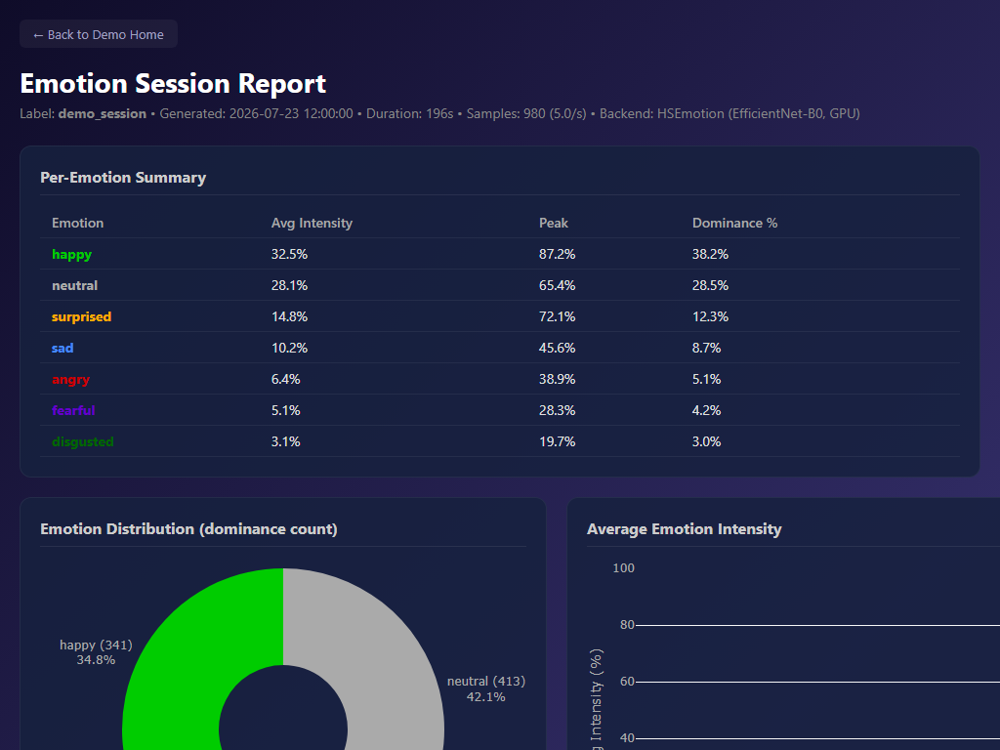
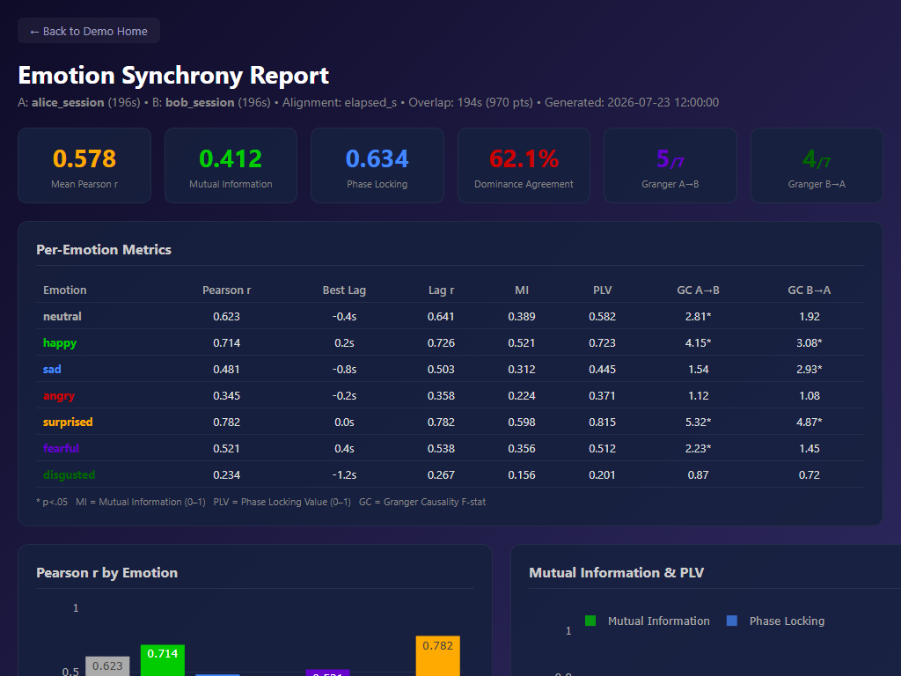

Interactive session analysis — pie chart, stacked area timeline, per-emotion bar chart, and raw data table. Powered by HSEmotion (EfficientNet-B0) on AffectNet.

Dyadic synchrony analysis — Pearson r, Mutual Information, Phase Locking, Granger Causality, and running correlation across two simultaneous sessions.